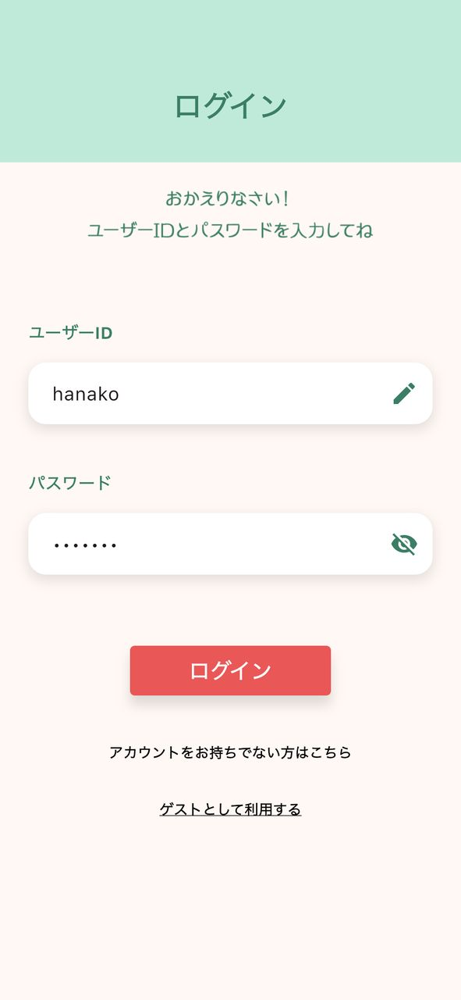
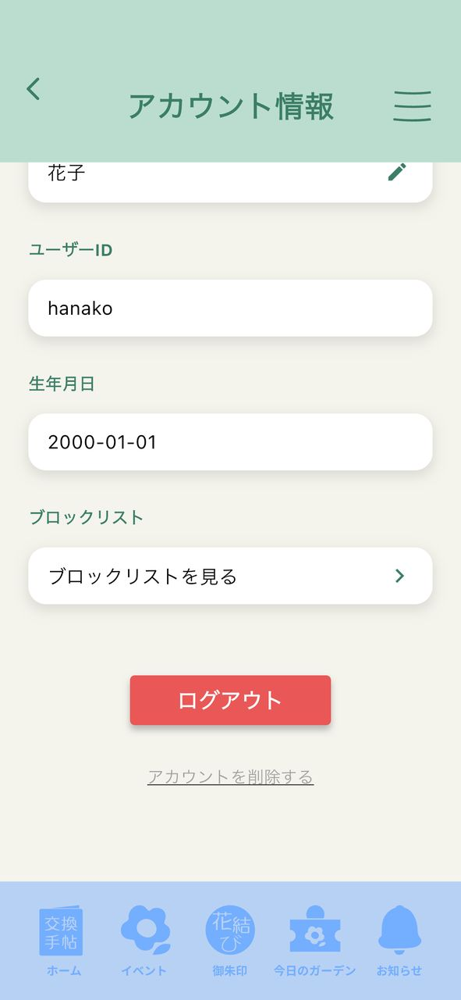

⼀⼈⼀花 交換手帖 in 能登半島
アカウント削除について
注意事項
削除後にアカウントを復元することはできません。十分ご注意のうえお手続きください。
また、アカウント削除の際には、本人確認のため、登録時に設定したユーザーIDおよびパスワードが必要となります。
手順
アプリ内から削除する場合
削除したいアカウントにログインした状態で、画面右上のボタンから「メニュー」を開き、「アカウント情報」を選択してください。
アカウント情報画面の下部にある「アカウントを削除する」を押し、表示される案内に従って操作を進めることで、アカウントを削除できます。




削除を依頼する場合
こもれびのメールアドレス (komorebi.volo@gmail.com) 宛てに、アカウント削除を希望する旨のメールをお送りください。
メール本文には、「ユーザーID」および「パスワード」をご記載ください。内容を確認後、こもれびにてアカウント削除を行います。
※アカウント削除のため、一時的にお送りされたアカウントへログインさせていただきます。あらかじめご了承ください。
※必要に応じて、確認のためご連絡させていただく場合がございます。
アカウント削除後のデータについて
削除されるデータ
アカウント削除を実行すると、以下のデータが完全に削除されます。
・プロフィール情報 (ニックネーム、ユーザーID、パスワード、生年月日)
・獲得情報 (これまでに獲得した花結び御朱印の記録、および訪問履歴)
・設定情報 (ブロックリスト)
※システム上のバックアップとして、削除後も一定期間データが保持される場合がありますが、このデータが通常の運用で利用されることはありません。
保持されるデータ
以下のデータについては、アプリの特性上、アカウント削除後も保持される場合があります。
・公開投稿およびコメント (アカウント削除前にユーザーが行った写真投稿やコメント)
保持期間は本アプリの提供期間中です。ただし、運営団体が不適切と判断した場合や、サービスを終了する場合には削除されます。